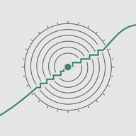

Semi-modular sequencer synth

MONODIA 32
A single-oscillator instrument where synthesis and sequencing are designed as one system: a 32-step timeline, deep pattern memory, assignable control voltage and a wide patch field.
Sound and sequence memory stay independent: a voice can remain fixed while patterns move through 64 slots. The 32-step sequencer keeps note, gate, accent, glide and ratchet data visible, while ASSIGN turns clock, sequence or MIDI information into control voltage.
- 32 directly editable steps
- 64 independent sequence memories
- Note / gate / accent / glide / ratchet lanes
- 16-mode ASSIGN CV output
- 32-socket semi-modular patch field
Desktop VST3 + standalone for Mac and Windows: Get the desktop version · Watch the Ableton Live demo
Release preparation
iOS build prepared- Runs on
- iPhoneiPad
- Formats
- StandaloneAUv3
- Available
- Android
- Coming
- VST3 · Windows + macOS